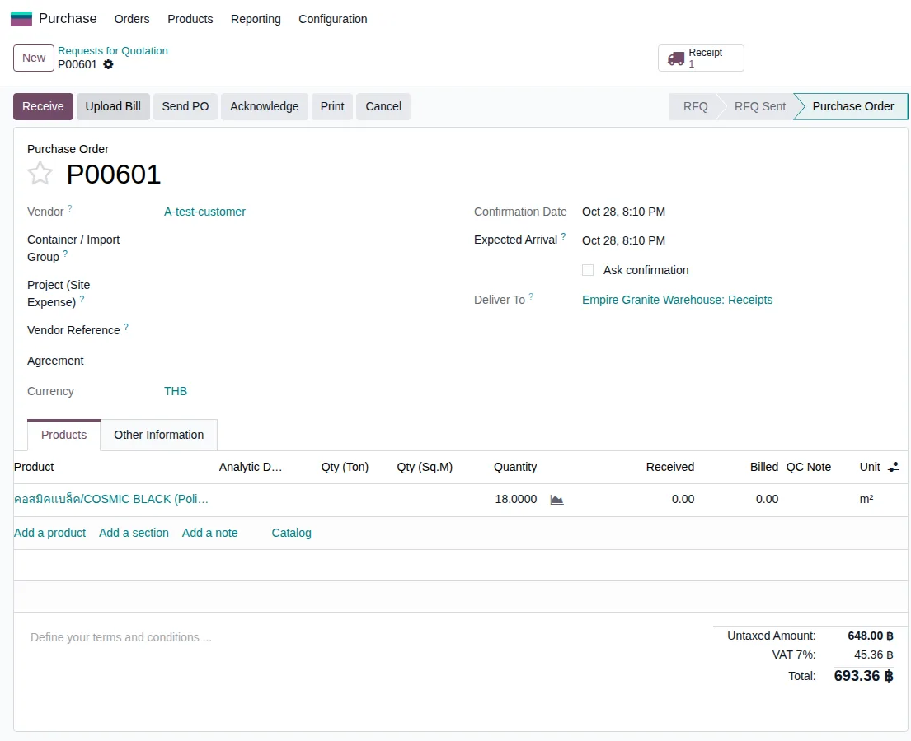
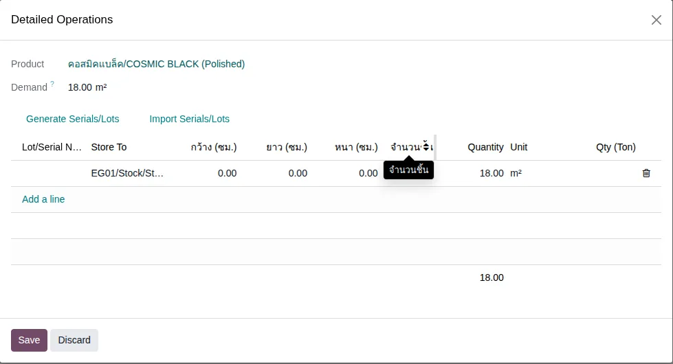
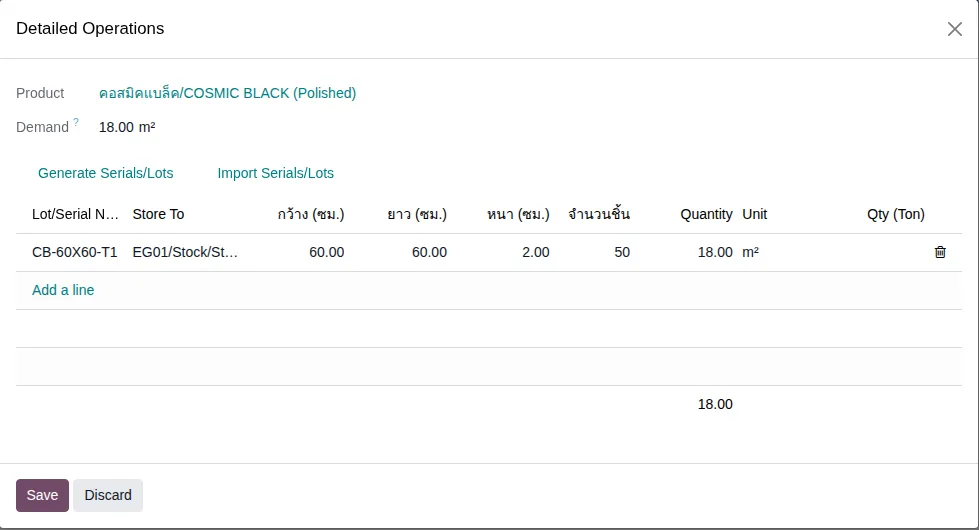
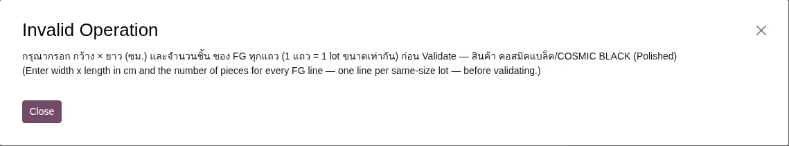
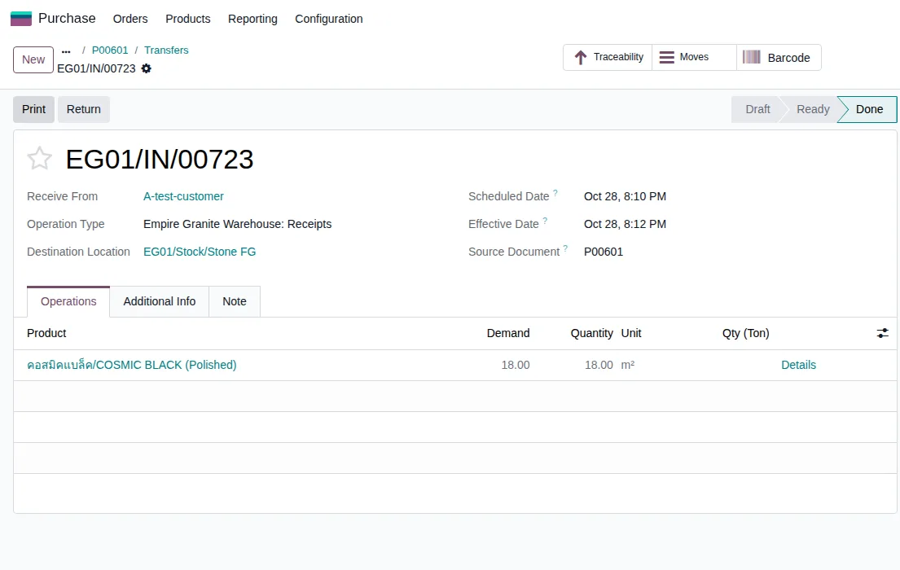
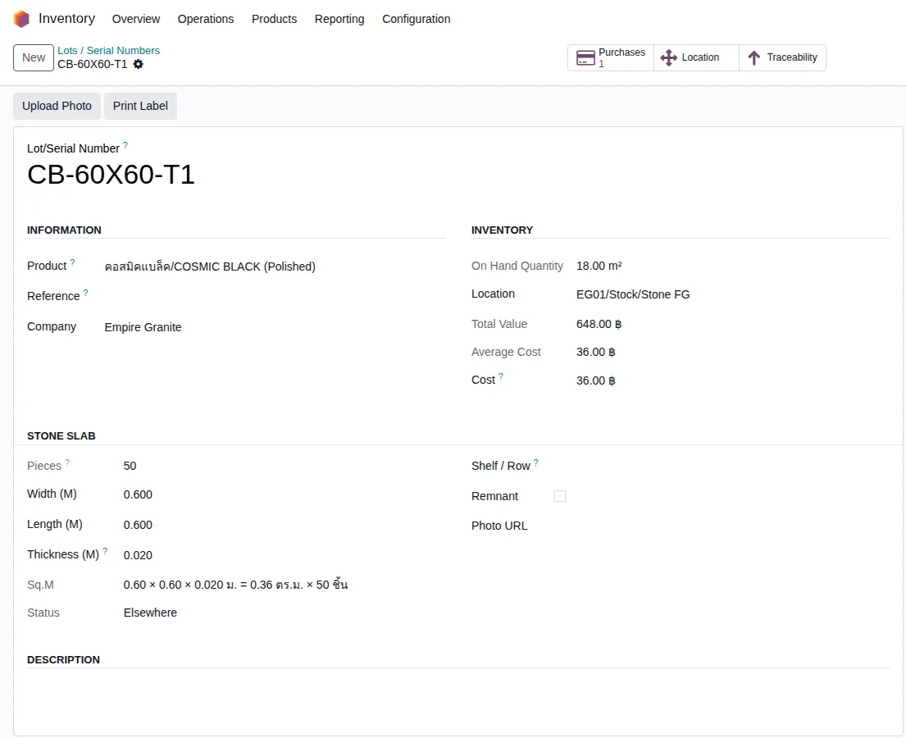

อัปเดตล่าสุด: 28 ตุลาคม 2569 (2026-10-28) · โมดูล stone_slab_inventory 19.0.2.109.41 · ภาพหน้าจอถ่ายจากระบบทดสอบ eg-tst เมื่อ 28 ตุลาคม 2569
บทนี้อธิบายการ ซื้อสินค้าสำเร็จรูป (FG) จากผู้ขายภายนอก เช่น แผ่นตัดสำเร็จที่ซื้อมาขายต่อ โดยไม่ได้ผลิตเอง ว่าสั่งซื้อได้ไหม รับของเข้าคลังอย่างไร และต่างจาก FG ที่ผลิตเองตรงไหน
1. ซื้อ FG คืออะไร
การซื้อ FG คือการสั่งซื้อแผ่นหินที่ตัดเสร็จตามขนาดแล้วจากผู้ขาย แล้วรับเข้าสต็อกเป็น FG โดยตรง ไม่ผ่านใบสั่งผลิตและไม่มี Slab ต้นทาง ระบบเก็บขนาดและจำนวนชิ้นไว้ที่ Lot เหมือน FG ที่ผลิตเอง เพื่อให้ขายแบบระบุขนาดได้ตามปกติ
2. แนวคิดหลัก 6 ข้อ
- ซื้อได้เฉพาะ FG ที่นับเป็น ตร.ม. FG ที่นับเป็นชิ้น (เจดีย์บัว ซุ้มบัว โคม) ปิดการสั่งซื้อไว้
- ใบสั่งซื้อไม่ต้องรู้ขนาด ใส่จำนวนเป็น ตร.ม. และราคาต่อ ตร.ม. เหมือนซื้อสินค้าทั่วไป
- ขนาดกรอกตอนรับของ ที่หน้ารายละเอียดใบรับของ (Detailed Operations) 1 แถว = 1 Lot ที่ขนาดเท่ากัน ช่องที่กรอกคือ ชื่อ Lot, กว้าง, ยาว, หนา (ซม.) และจำนวนชิ้น
- ตร.ม. ที่รับคำนวณจากขนาด = กว้าง × ยาว × จำนวนชิ้น ปัดเศษแบบตัดทิ้ง 2 ตำแหน่ง เหมือนใบส่งของลูกค้า แก้ตัวเลข Quantity เองไม่ได้
- ขนาดไปอยู่ที่ Lot พอยืนยันรับของ ระบบเขียนกว้าง ยาว หนา และจำนวนชิ้นลง Lot ให้ ไม่ต้องไปแก้ที่ฟอร์ม Lot ทีหลัง
- ต้นทุนเป็นราคาซื้อ Lot ที่ซื้อมาไม่มีใบสั่งผลิตและไม่มี Slab ต้นทาง ดูย้อนรอยไปถึงแผ่นหินที่ถูกตัดไม่ได้
3. ภาพรวมขั้นตอน
กล่องสีเหลืองคือจุดที่ต่างจากการซื้อสินค้าทั่วไป คือต้องกรอกขนาดและจำนวนชิ้นก่อนรับของ
4. ขั้นตอนทีละหน้าจอ
ตัวอย่างที่ใช้ตลอดบทนี้: ซื้อ คอสมิคแบล็ค/COSMIC BLACK (Polished) จากผู้ขาย A-test-customer จำนวน 18 ตร.ม. ราคา 36 บาท/ตร.ม. แผ่นขนาด 60 × 60 ซม. หนา 2 ซม. จำนวน 50 แผ่น (ทดลองบน eg-tst ผู้ใช้ emgdemo บริษัท Empire Granite)
4.1 สร้างและ Confirm ใบสั่งซื้อ
ไปที่ Purchase → Orders → Requests for Quotation → New เลือก Vendor กด Add a product ค้นหาชื่อหิน (พิมพ์ชื่อหิน เช่น COSMIC BLACK แล้วเลือกรายการที่ลงท้าย (Polished) ไม่ใช่ Block หรือ Slab) ใส่ Quantity เป็น 18 หน่วย m² และ Unit Price เป็น 36 แล้วกด Confirm Order ได้ใบสั่งซื้อ P00601 ยอดก่อนภาษี 648.00 บาท (VAT 7% = 45.36, รวม 693.36)

4.2 เปิดใบรับของและดูรายละเอียด (Detailed Operations)
กดปุ่ม Receipt ที่ใบสั่งซื้อ จะเห็นใบรับของ (เช่น EG01/IN/00723) ช่อง Destination Location เป็น EG01/Stock/Stone FG อัตโนมัติ แล้วกด Details ที่แถวสินค้า จะเห็นตารางที่มีคอลัมน์ใหม่ กว้าง (ซม.) · ยาว (ซม.) · หนา (ซม.) · จำนวนชิ้น ค่าเริ่มต้นเป็น 0 และ Quantity เป็น 18.00 ตามใบสั่งซื้อ

4.3 กรอกชื่อ Lot ขนาด และจำนวนชิ้น
กรอก Lot/Serial Number (ตัวอย่าง CB-60X60-T1) กว้าง 60 ยาว 60 หนา 2 (ซม.) และจำนวนชิ้น 50 ช่อง Quantity เปลี่ยนเป็น 18.00 ให้เอง (0.60 × 0.60 × 50 = 18.00) แล้วกด Save ถ้ารับหลายขนาดในใบเดียว ให้เพิ่มแถวใหม่ (Add a line) แถวละ 1 ขนาด และตั้งชื่อ Lot ต่างกัน

4.4 ถ้าไม่กรอกขนาด ระบบไม่ให้ผ่าน
ทดลองกด Validate โดยกรอกแค่ชื่อ Lot ระบบเด้งข้อความ "กรุณากรอก กว้าง × ยาว (ซม.) และจำนวนชิ้น ของ FG ทุกแถว ก่อน Validate" และยังไม่รับของเข้าสต็อก ต้องกลับไปกรอกให้ครบก่อน

4.5 Validate แล้วได้อะไร
กด Validate ใบรับของเป็นสถานะ Done ปลายทางยังเป็น Stone FG ใบสั่งซื้อแสดง Received 18.00

4.6 ดูผลที่ Lot
ไปที่ Inventory → Products → Lots/Serial Numbers เปิด Lot ที่รับ จะเห็น On Hand 18.00 ตร.ม. ที่ EG01/Stock/Stone FG Total Value 648.00 บาท (18 × 36) ต้นทุนเฉลี่ย 36.00 บาท และในส่วน Stone Slab ขึ้น Pieces 50 กว้าง 0.600 ยาว 0.600 หนา 0.020 เมตร สรุปเป็น "0.60 × 0.60 × 0.020 ม. = 0.36 ตร.ม. × 50 ชิ้น"

4.7 ขาย FG ที่ซื้อมา
บรรทัด FG ในใบเสนอราคาที่ระบุขนาด 60 × 60 ซม. หนา 2 ซม. มองเห็นสต็อกของ Lot นี้ ช่องหมายเหตุสต็อกแสดง "ตรงขนาด 18.00 ตร.ม." (ผลจากการทดลองด้วยสคริปต์บน eg-tst ยังไม่ได้ถ่ายภาพหน้าจอ และยังไม่ได้ทดลองส่งของจนจบ)
5. สรุปเงื่อนไขทั้งหมด
| สถานการณ์ | ระบบทำอย่างไร |
|---|---|
| สั่งซื้อ FG แผ่นตัด (นับเป็น ตร.ม.) | ทำได้ ใบรับของปลายทางเป็น Stone FG |
| สั่งซื้อเจดีย์บัว ซุ้มบัว โคมหินอ่อน (นับเป็นชิ้น) | ซื้อไม่ได้ ปิดการสั่งซื้อไว้ ผลิตเองอย่างเดียว |
| กด Validate โดยไม่กรอก กว้าง ยาว หรือจำนวนชิ้น | ไม่ผ่าน มีข้อความเตือน (ทดลองแล้ว) |
| กรอกขนาดและจำนวนชิ้นครบ | Quantity = กว้าง × ยาว × ชิ้น (ตัดทิ้ง 2 ตำแหน่ง) รับเข้า Stone FG และเขียนขนาด จำนวนชิ้นลง Lot |
| ไม่กรอกความหนา | ตามการออกแบบ ระบบใช้ความหนาจาก variant ของสินค้า ถ้า variant ไม่มีความหนา ระบบให้กรอกเอง (ยังไม่ได้ทดลองกรณีไม่กรอก) |
| ใช้ชื่อ Lot เดิมที่มีขนาดอื่นอยู่แล้ว | ตามการออกแบบ ระบบไม่ให้ผ่าน ให้ตั้งชื่อ Lot ใหม่สำหรับขนาดใหม่ (ยังไม่ได้ทดลอง) |
| แก้ช่อง Quantity เองในแถว FG ที่ซื้อ | แก้ไม่ได้ ต้องแก้ที่ขนาดหรือจำนวนชิ้น |
| ขายแบบระบุขนาดตรงกับ Lot ที่ซื้อมา | เห็นสต็อก "ตรงขนาด" (ทดลองด้วยสคริปต์) |
| ต้นทุนของ Lot ที่ซื้อ | ราคาซื้อ × ตร.ม. ที่รับ (18 × 36 = 648.00 ทดลองแล้ว) |
| ย้อนรอย Lot ที่ซื้อไปหา Slab ต้นทาง | ไม่มี เพราะไม่ได้ผลิตเอง |
6. สิ่งที่เปลี่ยนจากเดิม
| เดิม (ก่อน 28 ต.ค. 2569) | ตอนนี้ |
|---|---|
| FG ที่ซื้อเข้ามารับเป็นสินค้าทั่วไป เข้าโซน Stock ปกติ ไม่ใช่ Stone FG | เข้าโซน Stone FG เหมือน FG ที่ผลิตเอง |
| ตอนรับของไม่มีช่องกรอกขนาด Lot ที่ได้ไม่มีขนาด ต้องไปกรอกที่ฟอร์ม Lot เอง ถ้าลืม การขายแบบระบุขนาดมองไม่เห็นสต็อก | กรอกขนาดตอนรับของ ระบบเขียนลง Lot ให้ และบังคับกรอกก่อน Validate |
| Lot ที่รับก่อนหน้านี้ (เช่น E2222-60X60 จากใบสั่งซื้อ P00310) ไม่มีจำนวนชิ้นบน Lot | Lot ใหม่มีจำนวนชิ้นทุก Lot Lot เก่าไม่ถูกแก้ ถ้าต้องการจำนวนชิ้น ให้กรอกที่ฟอร์ม Lot เอง |
7. FAQ
ทำไมสั่งซื้อไม่ต้องกรอกขนาดแผ่น
เพราะตอนสั่งผู้ขายมักยังไม่ได้ตัด ขนาดจริงรู้ตอนของมาถึง จึงกรอกตอนรับของ
ซื้อเป็นแผ่นแต่ใบสั่งซื้อเป็น ตร.ม. ได้ไหม
ใบสั่งซื้อใช้ ตร.ม. เท่านั้น ถ้าผู้ขายเสนอเป็นแผ่น ให้แปลงเป็น ตร.ม. ก่อนใส่ใบสั่งซื้อ จำนวนแผ่นจริงกรอกตอนรับของ
รับหลายขนาดในใบรับเดียวได้ไหม
ได้ เพิ่มแถวใน Detailed Operations แถวละ 1 ขนาด ตั้งชื่อ Lot ไม่ซ้ำกัน (ทดลองเฉพาะกรณีขนาดเดียว)
อยากซื้อเจดีย์บัวหรือโคมจากข้างนอก ทำได้ไหม
ตอนนี้ปิดไว้ เพราะสินค้ากลุ่มนี้นับเป็นชิ้นและติดตามเป็น Serial ซึ่งยังไม่มีช่องกรอกตอนรับของ หากต้องการ ต้องขอเพิ่มเป็นงานแยก
ใบแจ้งหนี้ผู้ขาย (Vendor Bill) คิดอย่างไร
เป็นไปตามใบสั่งซื้อ คือ ตร.ม. × บาท/ตร.ม. ยังไม่ได้ทดลองออก Vendor Bill
8. ข้อจำกัดที่ทราบ
- ทดลองด้วยหน้าจอจริงเฉพาะกรณีรับครบในใบเดียว ขนาดเดียว หนึ่ง Lot และผู้ขายหนึ่งราย
- ไม่ได้ทดลองรับบางส่วน (Backorder) รับหลายขนาดในใบเดียว รับเกินจำนวนที่สั่ง การคืนของให้ผู้ขาย และ Vendor Bill
- ไม่ได้ทดลองกรณีไม่กรอกความหนา และกรณีใช้ชื่อ Lot ซ้ำกับ Lot เดิมที่ขนาดต่างกัน (เขียนตามการออกแบบ)
- การขายแบบระบุขนาดทดลองด้วยสคริปต์เท่านั้น ไม่ได้ถ่ายภาพหน้าจอ และไม่ได้ทดลองส่งของจนจบ
- ขนาดต้องกรอกทุกแถว ไม่มีทางผ่านสำหรับ FG ที่ไม่ระบุขนาด
- ยังไม่มีไฟล์ Excel นำเข้าขนาดตอนรับ FG เหมือนที่มีสำหรับ Slab สำเร็จรูป
- FG ที่นับเป็นชิ้น (Serial) ยังซื้อไม่ได้
- ข้อมูลในใบสั่งซื้อ P00601 / Lot CB-60X60-T1 เป็นข้อมูลทดลองบน eg-tst